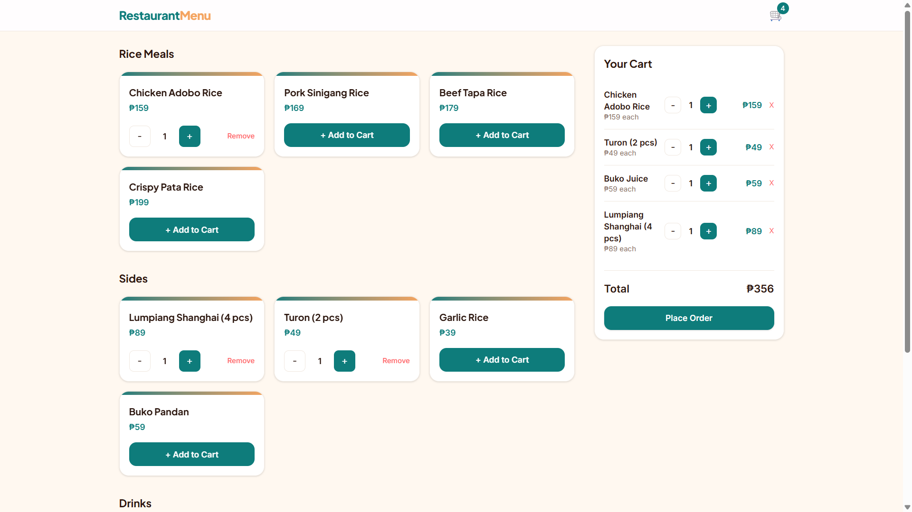
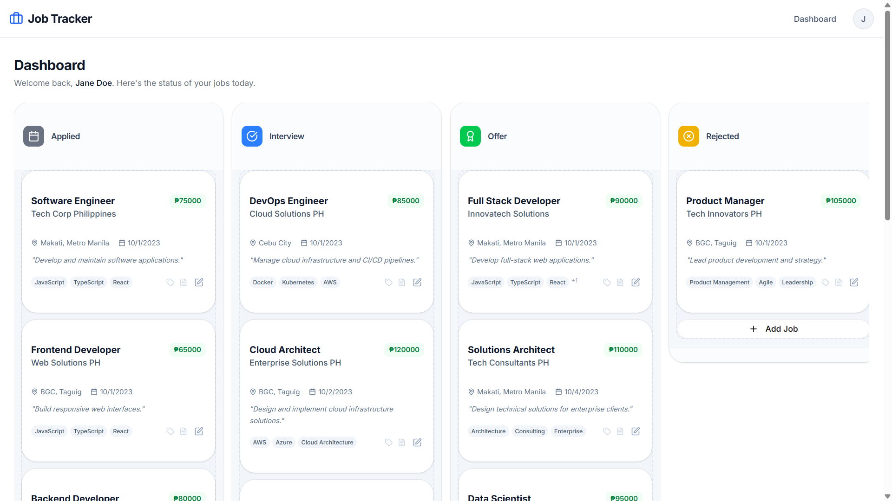
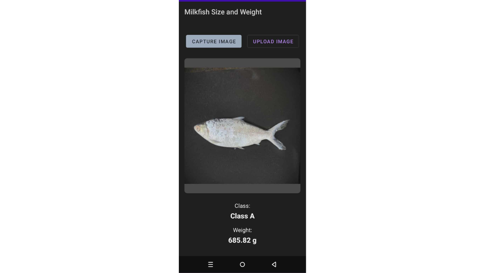
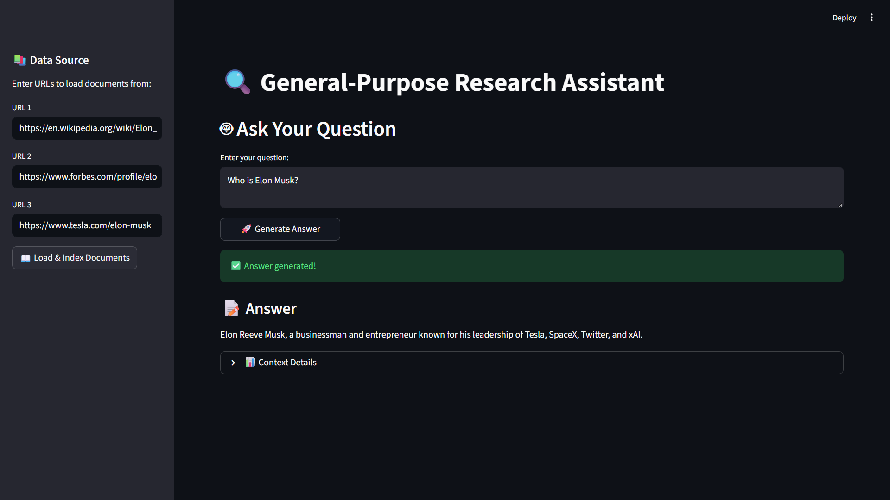
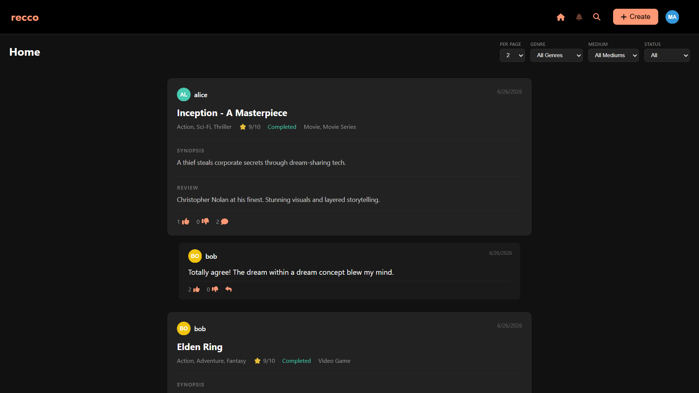
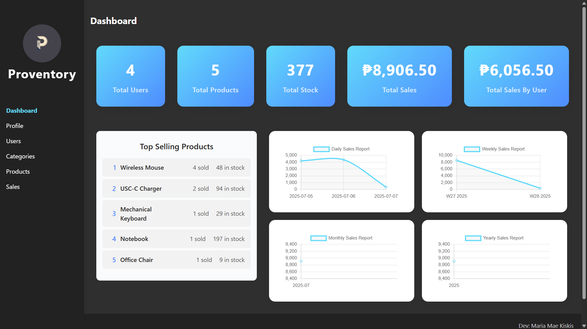
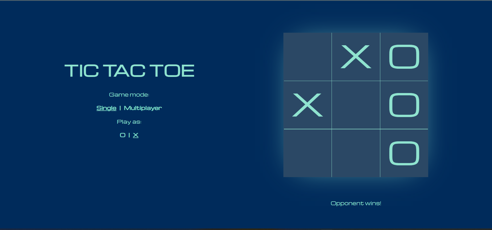
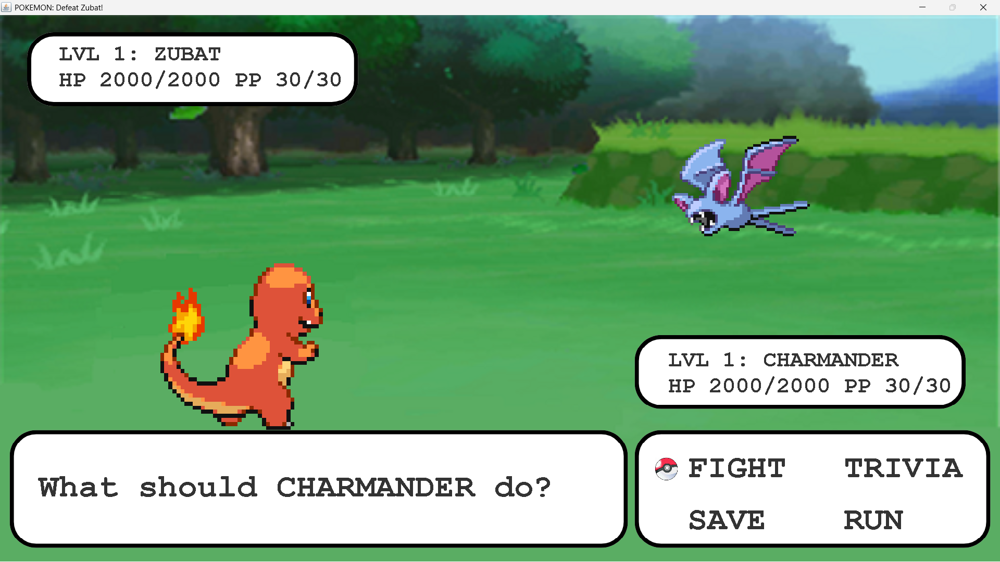

I am deeply passionate for technology and programming. I build software across the stack — from mobile apps and web platforms to machine learning models. I enjoy turning ideas into working products and constantly exploring new tools and frameworks.
- React
- Next.js
- TypeScript
- Python
- Java
- Android
- Node.js
- MongoDB
- MySQL
- Tailwind CSS
- Machine Learning
- HTML/CSS/JS
Recent Work

A full-stack QR menu ordering system for restaurants built with React, Express, Prisma, and MySQL. Customers scan a QR code to browse the menu, place orders, and manage checkout — all from their phone. Admins have a dashboard for real-time order management.

A full-stack job application tracking system built with Next.js and MongoDB. Organize your job hunt using a Kanban-style board with drag-and-drop functionality, track applications, and manage your job search journey efficiently.

Thesis App
A mobile application that classifies and estimates the weight of milkfish using machine learning models. Random Forest and Gradient Boosting algorithms were trained in Python with scikit-learn for classification and regression tasks, then deployed through a local API and integrated into an Android app built with Java and Android Studio.

General-Purpose Research Assistant
An open-source research assistant that reads web articles, indexes them with RAG, and answers user questions using a LLaMA-based LLM.

Recco
A social media platform designed for users to share and recommend their favorite shows across a variety of mediums and genres, built using React, Node.js, and MySQL

Proventory
An inventory management system designed for retail stores to help monitor business performance and make informed decisions, built using React, Node.js and MySQL

A web based game inspired from tic tac toe with both multiplayer and play-against-a-bot feature, implemented using HTML, CSS, and JavaScript.

POKEMON: Defeat Zubat!
A pokemon battle simulation mini-game inspired from old school pokemon nintendo games with added trivia feature, implemented using Java.
Get In Touch
Feel free to reach out to me if you need help with anything. I'd be more than happy to help!